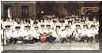
Foto en Caravaca de la Cruz
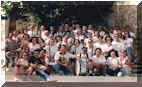
Plaza de la Iglesia de MoratallaJulio de 1999
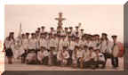
Plaza de la Iglesia de Moratalla1978
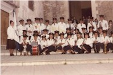
Escalera de entrada a la Iglesia Nuestra Señora de la Asunción
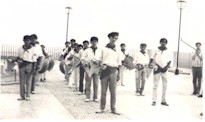
Banda de cornetas y tambores
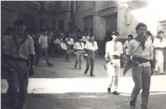
Banda de cornetas y tambores
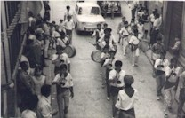
Banda de cornetas y tambores
Sala de ensayosNoviembre 2003
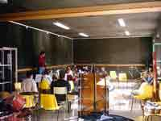
Sala de ensayosNoviembre 2003
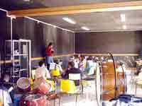
Sala de ensayosNoviembre 2003
Sala de ensayosNoviembre 2003
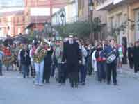
San Antón17 de Enero de 2004
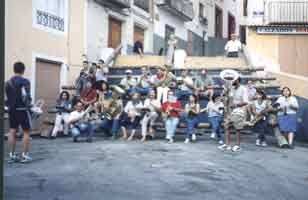
Diana Cristo del Rayo17/07/2000
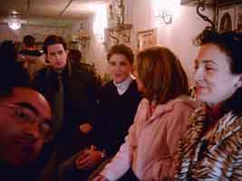
Músicos haciendo la piti después del ensayo29/02/2004
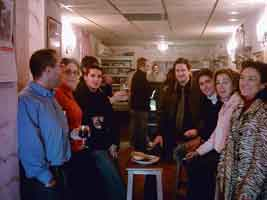
Músicos haciendo la piti después del ensayo29/02/2004
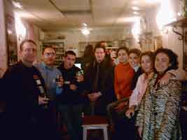
Músicos haciendo la piti después del ensayo29/02/2004